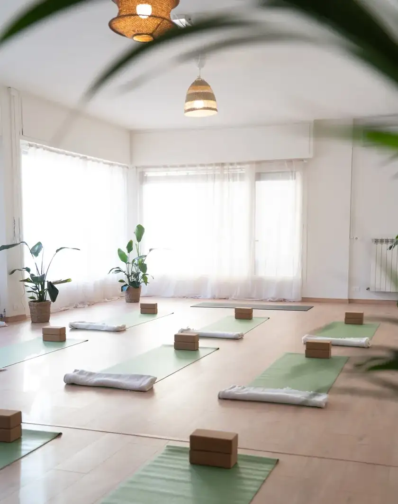
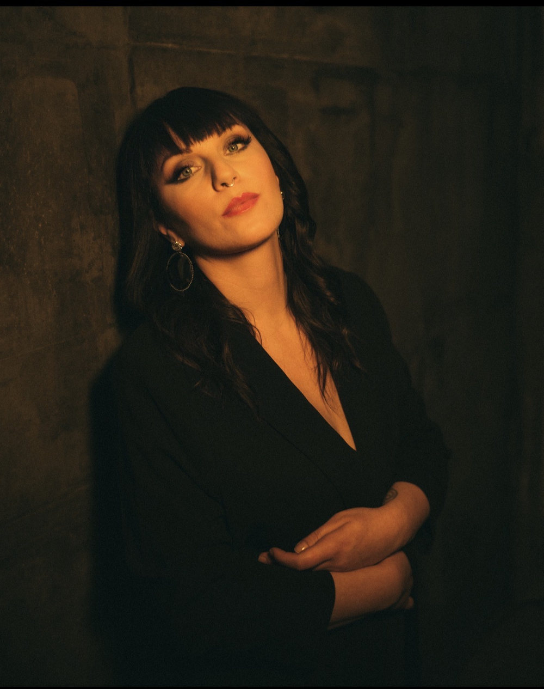
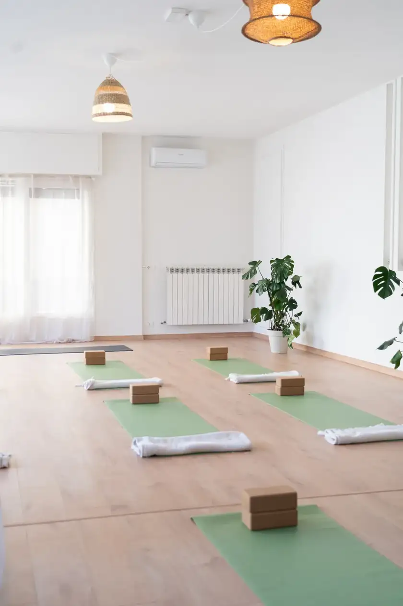
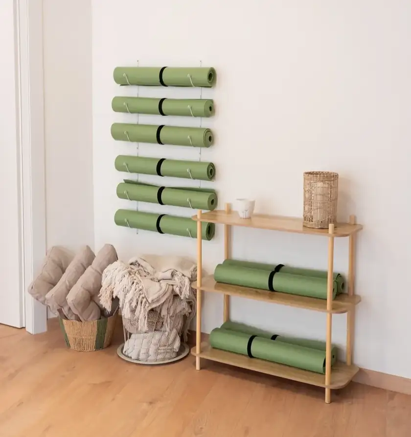
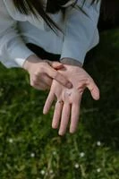
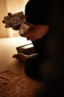
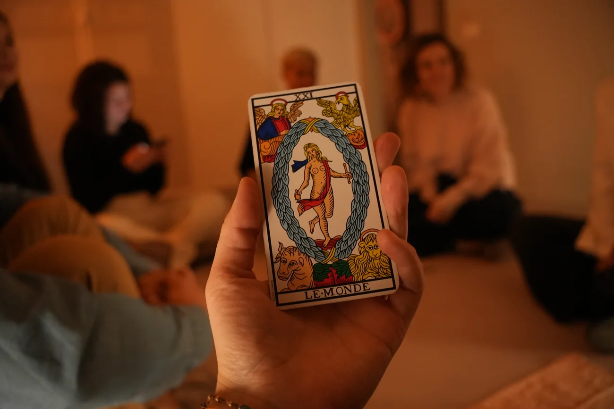

Osservare.
Ciò che abbiamo ereditato e ciò che continua a ripetersi nelle relazioni.
AstroSonico · Ritiro esperienziale
Non tutto ciò che portiamo ci appartiene.
Una giornata per tornare alle origini e osservare come vivono ancora nelle relazioni di oggi.
Domenica 20 dicembre 2026
Ayre Yoga · Oggiono (LC) 9.30–21.30
150 € a persona pasti esclusi


Chi conduce la giornata
RADICI è una giornata di lavoro simbolico attraverso astrologia evolutiva, Tarocchi di Marsiglia, metagenealogia, meditazione e pratiche di ascolto.
Uno spazio per osservare le proprie origini e il modo in cui continuano a vivere nelle relazioni.
Perché RADICI
Prima dei legami che scegliamo, ci sono quelli dentro cui siamo cresciute. È lì che impariamo qualcosa sull'amore, sulla distanza, sulla fiducia e sui confini.
Possiamo osservare ciò che abbiamo imparato. E scegliere cosa farne, oggi.
Richiedi il tuo postoIl lavoro della giornata
Ciò che abbiamo ereditato e ciò che continua a ripetersi nelle relazioni.
La nostra voce dai ruoli e dalle aspettative che abbiamo imparato a portare.
Le risorse ricevute, oltre ai pesi che la nostra storia ci ha lasciato.
Che cosa desideriamo custodire e cosa non vogliamo più ripetere.
A chi si rivolge

Le informazioni
Pranzo e cena non inclusi. Durante la giornata sono previste pause; i pasti sono liberi e a carico di ciascuno, nei locali vicini alla shala. Trasporto escluso.
Richiedi il tuo postoLa richiesta non è una prenotazione confermata. Riceverai via email i prossimi passaggi.
Da dove arrivo? Che cosa continuo a ripetere? Che cosa scelgo oggi?
Una giornata per osservare le nostre radici, riconoscere ciò che abbiamo ereditato e scegliere come stare nelle relazioni.
Famiglia. Infanzia. Appartenenza. Relazioni. Separazioni. Memoria. Eredità. Ci sono storie che continuiamo a portare con noi, anche quando siamo convinte di averle lasciate lontano.
20 dicembre · 9.30–21.30 · Ayre Yoga, Oggiono · 150 € · pasti esclusi
RADICI nasce come uno spazio in cui osservare le proprie origini, il modo in cui continuano a vivere nelle relazioni e ciò che oggi sentiamo di poter scegliere diversamente.
Durante la giornata lavoreremo insieme attraverso astrologia evolutiva, Tarocchi di Marsiglia, meditazione e pratiche di ascolto, in un tempo dedicato a riconoscere ciò che portiamo con noi e ciò che desideriamo trasformare.
Le origini, i primi legami, le relazioni di oggi.
Prima di imparare a scegliere le nostre relazioni siamo nate dentro una famiglia, una storia, un modo di amare, comunicare, proteggerci, entrare in conflitto, stare vicine o prendere distanza.
E osservando, semplicemente osservando, abbiamo assorbito. Abbiamo imparato cosa significasse sentirci amate, viste, accolte. Ma anche cosa significasse non esserlo.
Molto prima di poter decidere chi eravamo, qualcosa aveva già cominciato a mettere radici dentro di noi.
Queste radici continuano a vivere nel modo in cui oggi entriamo nelle relazioni: nelle persone che scegliamo, in ciò che cerchiamo negli altri, nelle paure che ritornano, nella facilità o nella fatica di restare, andare via, fidarci, mettere un confine.
Non tutto ciò che abbiamo imparato a portare ci appartiene.
Possiamo allontanarci da ciò che è stato. Possiamo cambiare città, relazioni, abitudini, vita. Eppure qualcosa rimane. Dedicheremo una giornata a prestargli attenzione.
Richiedi il tuo postoPer questa edizione di RADICI ci incontreremo ad Ayre Yoga, a Oggiono, in una shala che per un'intera giornata diventerà il nostro luogo di ascolto, osservazione e condivisione.
Una giornata da dedicare alle nostre origini e al modo in cui continuano a vivere dentro le relazioni che costruiamo oggi.
Uno spazio fuori dai ritmi abituali, senza la necessità di partire per un intero weekend.

Una mano che si apre, un fiore che nasce, un ramo da raggiungere. Anche questo parla di radici.


Durante questa giornata lavoreremo sulle nostre origini e sul modo in cui continuano ad abitare le relazioni del presente.
Partiremo dalla famiglia e dai primi legami per osservare ciò che abbiamo imparato sull’amore, sulla vicinanza, sulla sicurezza, sull’abbandono, sulla cura, sul conflitto e sulla separazione.
Attraverso astrologia, Tarocchi di Marsiglia, pratiche simboliche e condivisioni, porteremo attenzione alle domande che riguardano la nostra vita di oggi.
Cosa appartiene alla mia storia? Che cosa continuo a ripetere? Che cosa scelgo adesso?

Raccogliere il 2026. Scegliere cosa portare nel 2027.
Richiedi il tuo postoRADICI nasce dal tempo astrologico che stiamo attraversando. Arriveremo a dicembre dopo un autunno segnato dalle retrogradazioni di Venere e Mercurio: un periodo che ci invita a tornare sulle relazioni, sui desideri, sui valori, sulle parole dette e non dette.
Ho scelto di incontrarci alla fine del 2026 per osservare ciò che l’anno ha mosso e raccoglierlo attraverso il nostro Tema Natale. Prima di entrare nel 2027, torniamo alla Terra, alla materia, al corpo e a ciò che desideriamo far radicare.
Per scegliere con maggiore libertà dove andare.
Compila il modulo per richiedere la partecipazione. Riceverai via email le informazioni per confermare il tuo posto e le modalità di pagamento. La richiesta non equivale a un'iscrizione definitiva.
Richiedi il tuo postoCompila il modulo per richiedere la partecipazione. Riceverò la tua richiesta e ti risponderò personalmente via email con le modalità di conferma e pagamento.
Nessun calendario da consultare, nessun pagamento immediato sul sito.